News for 2015
2019 2018 2017 2016 2014 2013 2012 2011 2010 2009 2008
________________________________________________
Lights
November 20, 2015
Finally: 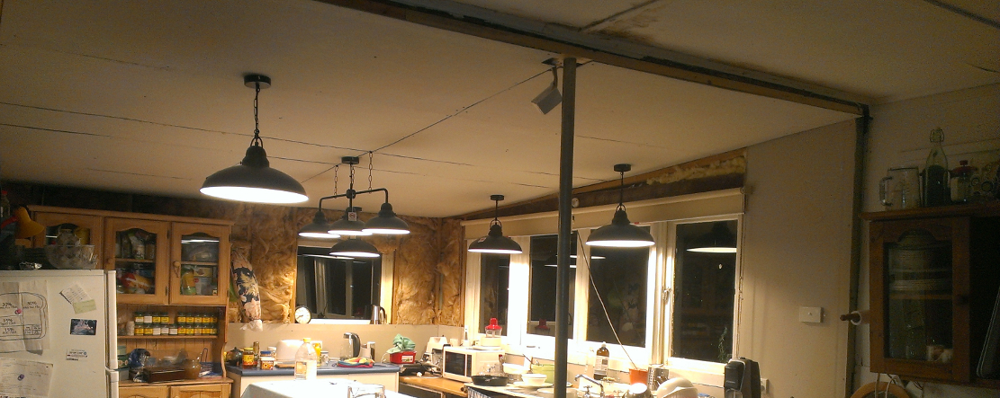________________________________________________
Site Back to Normal
September 20, 2015
Photos of Tainn are now on his very own page: 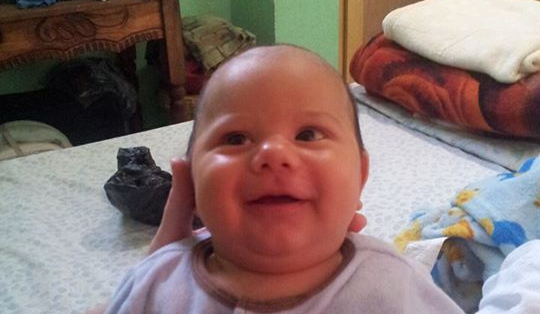We now have an extra block and a shed that's bigger than our house: 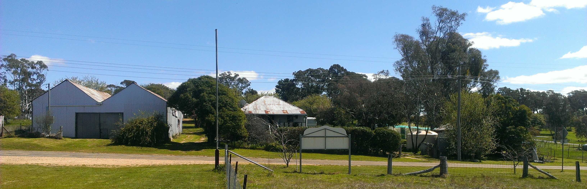">
And here's the blooming orchard: 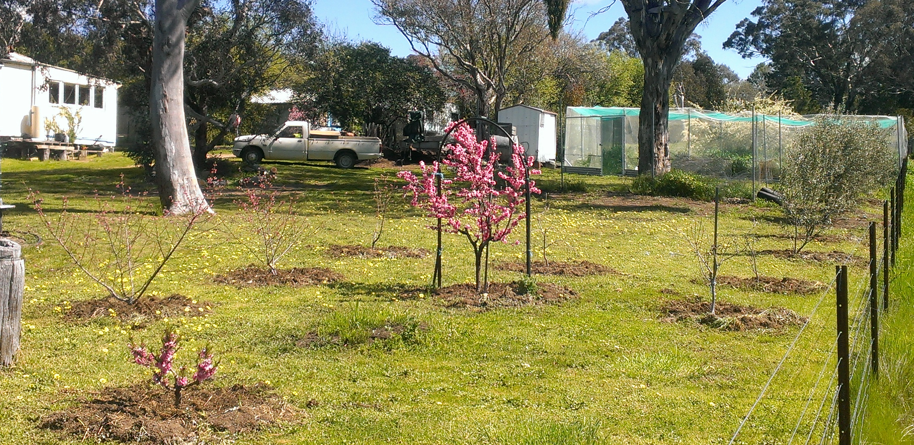
________________________________________________
Detente
May 11, 2015
Our old cat Ruby, the tabby, seems to have resigned herself to Pippin's affections: 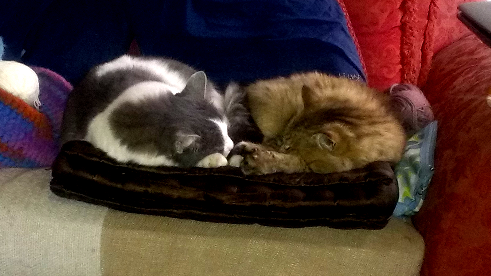Also, work has commenced on the expansion of Lesley's studio into what was my shed. (My shed will soon be Gary's old shed, which is larger than our entire house!) 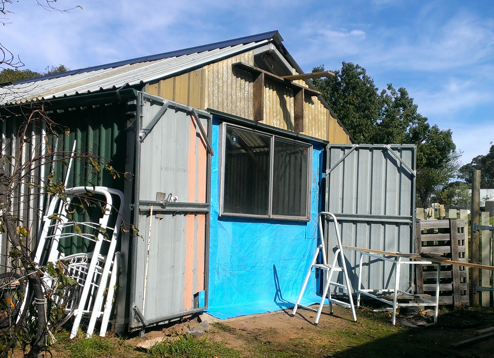
________________________________________________
Our Cabin at Wallaga Lake
April 12, 2015
Lesley and I have realised that we don't want to stay anywhere other than Wallaga Lake for our holidays, so we've bought out own cabin there. I've given it its own page here:
We'd love friends and family to come and stay with us in the future - I'll let you know the details later on.
________________________________________________
Gorgeous Grapes
February 25, 2015
What's in the bucket is about a tenth of the total this year from just the one vine! I've been making grape jam, which is made only from grapes, without sugar or pectin: 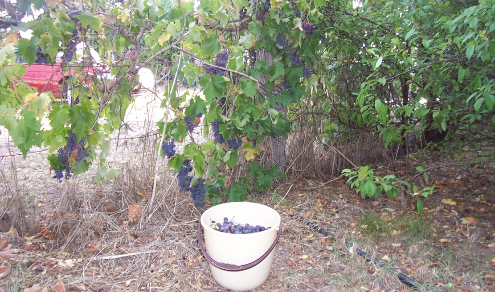________________________________________________
Plow/ugh
February 19, 2015
I was going to put this pleaux in its own garden and call it the "Plau Garden" but I realised it would look nicer in the Tank Garden. 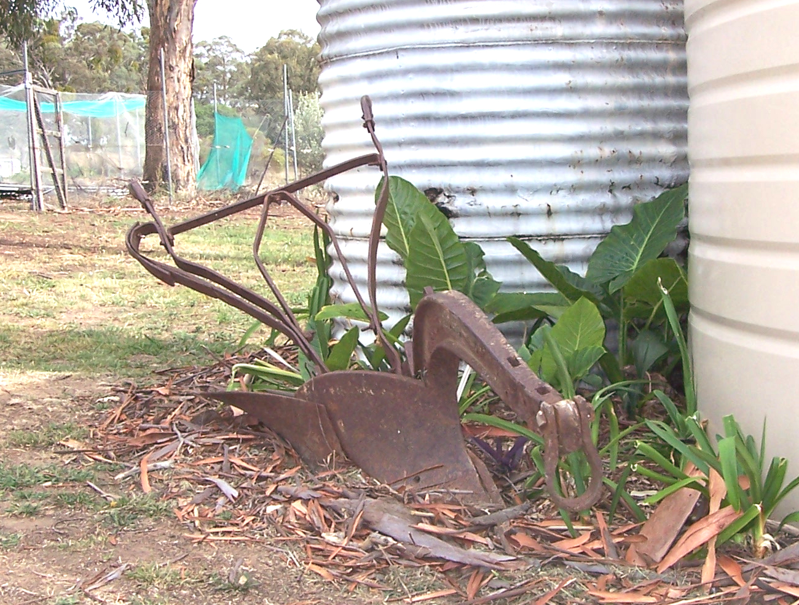 I've left my job cleaning at the retirement hostel and started doing gardening, lawn-mowing, rubbish removal and odd jobs. I traded 4 hours work for this ploue and another one nearly as good. I think they're the type that was pulled by a cough. Or maybe a horse.________________________________________________
Cladding Almost Complete
January 17, 2015
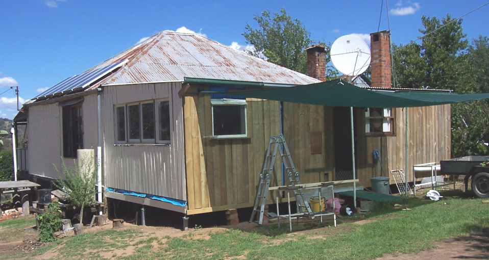________________________________________________
Perfect Peaches
January 6, 2015
And no sprays, except copper before flowering for the curly-leaf: 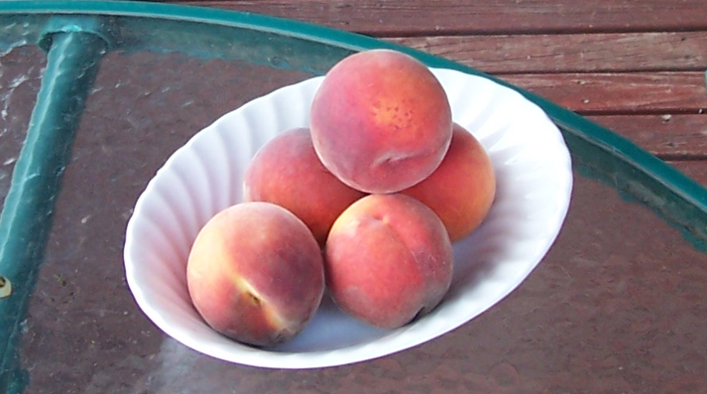________________________________________________
Happy 2015
January 1, 2015
My New Years Resolution: 720p, same as last year...Also, I've changed the layout of the site so that the blog section has the full width of the page. Now that most people have fast internet it makes more sense to have decent-sized photos, and the old layout wasted the available space by having the "Pages" menu using up a third of the width.
Here's a nice wide shot of the new Tank Garden, agapanthi courtesy of Cath & Paul: 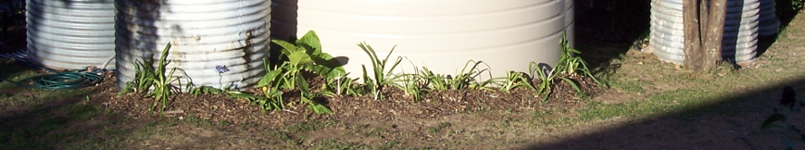
Also also, I'm now using a font called 'Bubblegum Sans'.